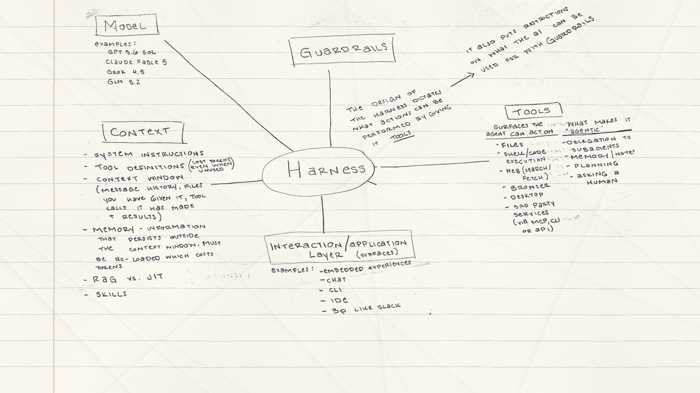

AI Basics · transition study
Crumple it up. Turn the page.
The old drawing folds away. A fresh sheet is ready for the next idea.
Download transition

The mind map · ready
→ next beat · Space play / pause · R replay · H hide controls · F fullscreen
Crumple & toss
Next page
Watch full sequence
Play / pause
Fullscreen